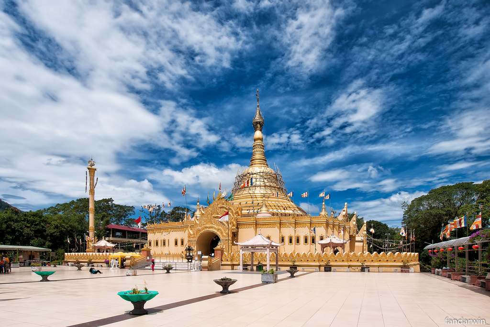
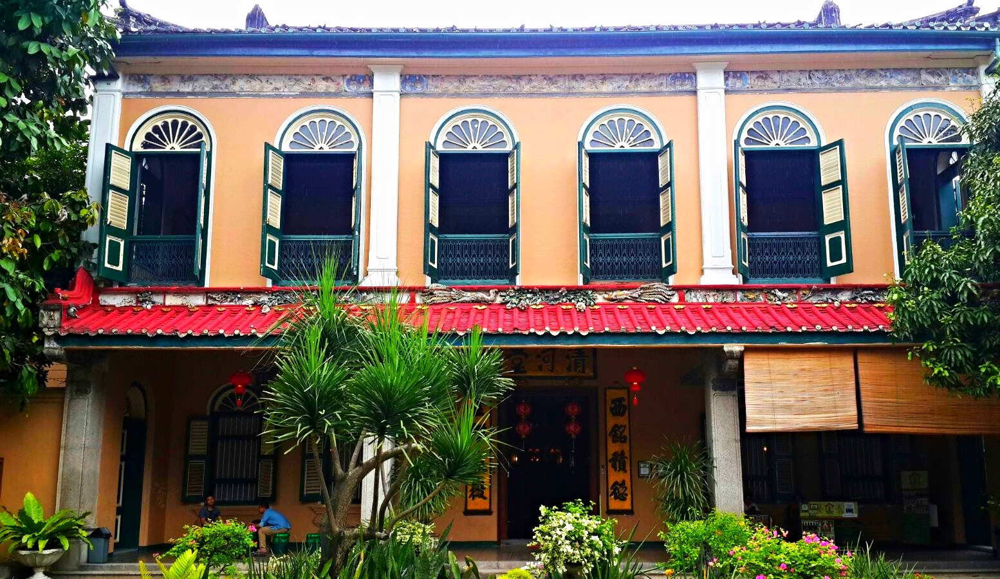
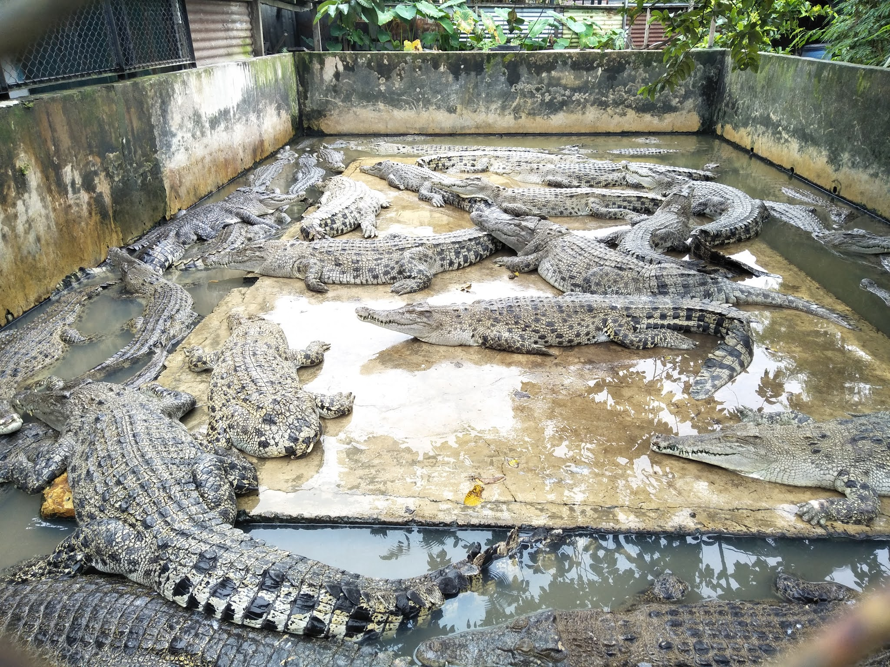
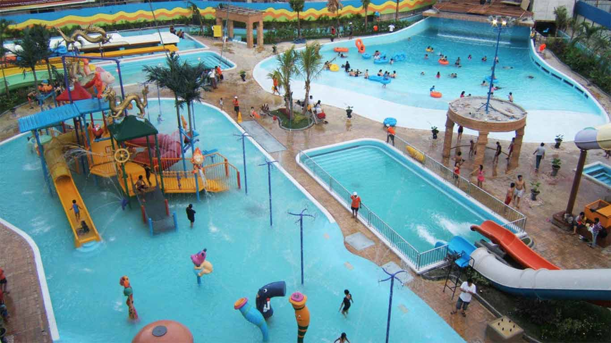
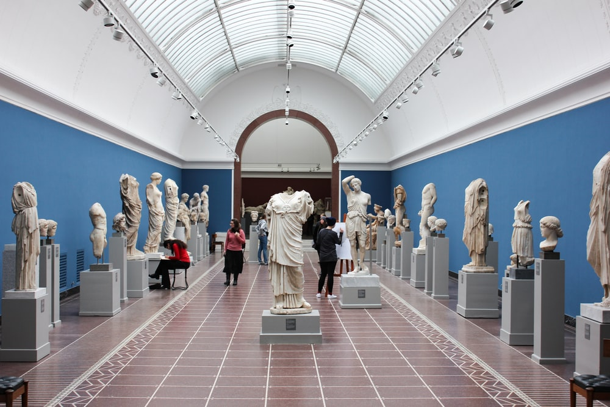
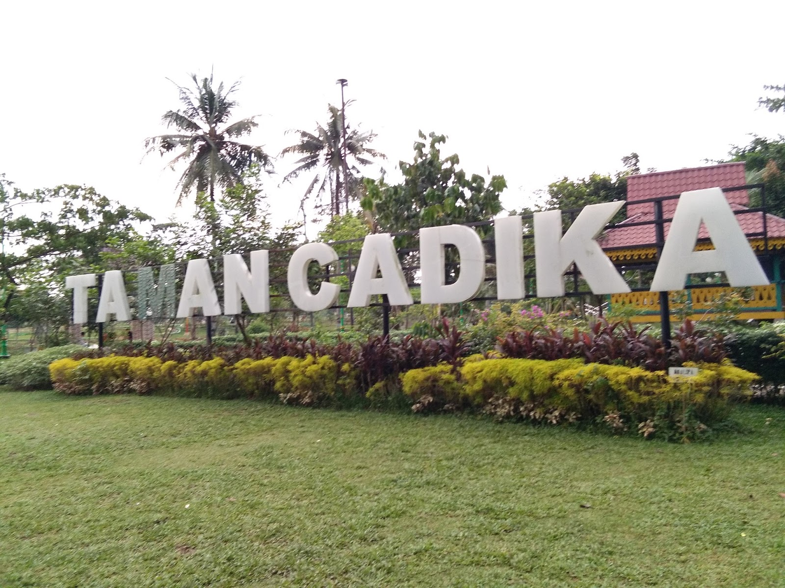

5 Tempat Wisata di Medan dan Sekitarnya
Medan menawarkan berbagai macam pilihan tempat wisata yang dapat dikunjungi. Mulai dari wisata alam, kuliner, hingga bangunan-bangunan dengan cerita yang menarik. Jika ingin berkunjung dalam waktu dekat,berikut 5 tempat rekreasi di Medan dan sekitarnya yang patut dikunjungi :
1. Museum Tjong A Fie Mansion
Rumah Tjong A Fie adalah salah satu landmark di kota Medan. Mungkin seperti simbol masyarakat etnis Tionghoa di Kota Medan. Rumah Tjong A Fie merupakan sebuah rumah tua yang kini berfungsi sebagai museum. Rumah ini dibangun oleh seorang saudagar Cina bernama Tjong A Fie yang hidup pada rentang waktu antara 1860 – 1921. Meskipun mempunyai usia lebih dari 100 tahun, bangunan rumah berlantai dua ini masih berdiri megah dan terjaga dengan baik.
Rumah yang kini telah menjadi menjadi museum ini merupakan salah satu bangunan cagar budaya yang ada di Medan. Bangunan mencakup area yang sangat luas, mencapai 6 ribu meter persegi. Tentu saja, karena rumah ini adalah milik seorang saudagar Cina, desain arsitektur yang digunakan pun adalah desain arsitektur Cina kuno. Namun sebagai tambahan, bangunan ini juga dipengaruhi dengan corak melayu serta Eropa.
Pembukaan Rumah Tjong A Fie untuk masyarakat umum baru dilakukan pada tahun 2009 lalu. Sejak itu, para traveler pun bisa secara lebih gamblang memperoleh pengetahuan mengenai sosok masa lalu seorang Tjong A Fie. Namun untuk masuk ke area museum ini terbilang cukup mahal. Setiap orang akan dikenakan biaya masuk sebesar 35 ribu rupiah. Sedangkan untuk para pelajar, bisa memperoleh tarif lebih murah yakni 20 ribu rupiah per orang.
2. Taman Buaya Asam Kumbang
Salah satu obyek wisata di Medan yang sudah dikenal ke mancanegara adalah Taman Buaya. Taman Buaya Asam Kumbang Kota Medan merupakan salah satu taman buaya terbesar di Indonesia. Bahkan, mungkin di Asia Tenggara.
Di sini, kamu bisa melihat ribuan ekor buaya, baik yang berada di kolam maupun yang ada di danau. Termasuk jenis buaya muara (Crocodilus porosus), jenis satwa yang merupakan salah satu hewan terbesar di dunia. Berlokasi di Jalan Bunga Raya, daerah Asam Kumbang, dekat Pajak Melati. Masih di dalam kota, walau di pinggiran.
Selain melihat koleksi buaya dan beberapa binatang seperti ular phyton, kamu bisa melihat atraksi ketika buaya makan bebek. Untuk melihat ini, kamu harus mengeluarkan kocek tambahan, selain karcis masuk, sebesar 25.000. Itu karena kamu harus membeli bebeknya. Penulis sebenarnya tidak terlalu menyukai atraksi ini karena terkesan kejam. Namun, ada juga yang menyukainya. Penulis tidak akan memberikan rekomendasi ke kamu terkait hal ini, namun kembali ke masing-masing.
3. Hairos Water Park
Salah satu tempat bermain anak di Medan. Hairos Water Park terletak di Jalan Jend. Gamin Ginting km 14,5, Pancur Batu. Masih satu jalan dengan jalan ke Berastagi. Tempat wisata air Hairos buka setiap hari. Namun, kalau Senin sampai Jumat hanya buka hingga jam 18.00. Harga tiket, menurut situs website hairos, bervariasi dari 40.000 hingga 60.000 per orang, tergantung hari.
Hairos merupakan obyek wisata yang cukup menjadi favorit bagi keluarga yang ingin berwisata air. Ia juga merupakan tempat wisata air terbesar dan terlengkap di Sumatera Utara. Terdapat beberapa kegiatan wisata air yang dapat kamu nikmati di sini. Kegiatan wisata tersebut yaitu water boom, kolam anak-anak, kolam arus, kolam air terjun, kolam ombak dan water dancing. Tertarik untuk merasakan jenis-jenis kolam tersebut, datang saja ke Hairos.
4.Museum Rahmat
Bila Anda berkunjung ke Kota Medan, apalagi bersama keluarga jangan lupa mampir ke Rahmat International Wildlife Museum & Gallery, di Jalan Letjen S Parman No 309, Medan, Sumut. Di tempat ini, Anda bisa melihat koleksi berbagai jenis binatang yang sudah diawetkan. Namun jangan salah sangka, binatang yang diawetkan ini adalah bintang yang sudah mati, yang awalnya hasil buruan yang dilegalkan, dan hasil sumbangan lembaga, serta dari rekan Rahmat Syah selaku pemilik galeri tersebut.
Di Museum Rahmat ini pengunjung bisa melihat koleksi lebih dari 2.000-an satwa dari berbagai belahan dunia. Museum ini merupakan pertama di Asia Tenggara, dan terbilang lengkap.
5. Lapangan Cadika
Merupakan lokasi wisata yang lagi hits dan baru di Kota Medan. Mungkin tidak banyak warga Medan mengenal tempat ini. Hal ini wajar karena taman ini, sesungguhnya, baru banyak dijadikan tempat bersantai sekitar 3 tahun ini. Dulunya hanya lapangan yang sering digunakan untuk perkemahan pramuka.
Lapangan Cadika terletak di Jalan Karya Wisata, Johor. Dalam taman terdapat sebuah danau. Terkadang terdapat beberapa warga sekitar memancing ikan. Lapangan Cadika dibuka setiap hari. Namun, ditutup setelah magrib. Ramai dikunjungi saat sore hari sebagai tempat untuk bersantai, duduk di tepi danau. Suasana rimbun, pemandangan danau akan memberi kesan tersendiri. Bagi sebagian anak muda, tempat ini dikategorikan sebagai salah satu taman romantis di Medan.